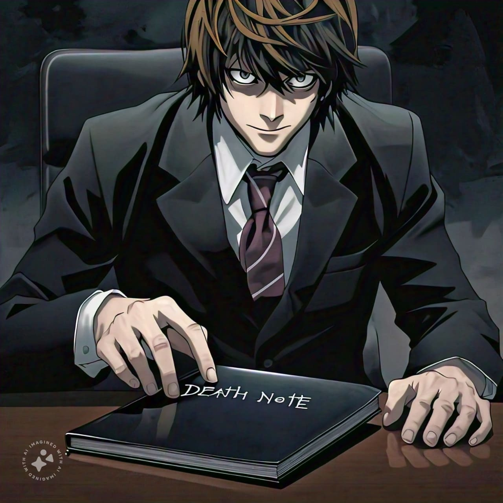
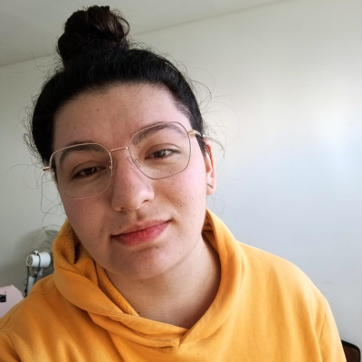
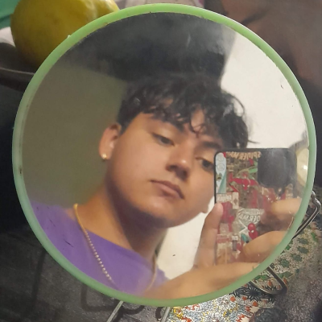

Proyecto de desarrollo de una aventura gráfica y videojuego interactivo, inspirados en el oscuro y fascinante
universo de Death Note.
Introducción
Al inicio del proyecto, se nos asignó la consigna de elegir un anime adaptado al formato live action. Optamos
por Death Note, una historia cargada de intriga y dilemas morales. Como parte del desarrollo, comenzamos
diseñando una aventura gráfica apoyada en un diagrama que detalla los diversos caminos que los usuarios pueden
explorar al interactuar con ella. Posteriormente, creamos un videojuego web inspirado en Pac-Man, ambientado en
el universo de Death Note, donde el jugador controla a Kira como el protagonista, mientras los Ryuks toman el
papel de fantasmas que lo persiguen
Aventura gráfica
Una aventura gráfica de toma de decisiones es un tipo de videojuego interactivo donde el jugador avanza a
través de una historia principalmente mediante elecciones que afectan el desarrollo de la trama. En lugar de
interactuar con personajes o explorar entornos, el jugador se enfrenta a una serie de decisiones cruciales que
determinan el curso de la narrativa.
El juego presenta imágenes estáticas acompañadas de texto, y las opciones disponibles para el jugador definen el
rumbo de la historia, permitiendo vivir diferentes caminos y finales. La experiencia se centra en la narrativa y
en cómo las decisiones del jugador impactan el destino de los personajes o el desenlace de la trama.
El reto principal de nuestro proyecto fue crear las imágenes estáticas que acompañan cada toma de
decisión. Dado que nuestro juego se centra en una narrativa interactiva, necesitábamos imágenes que
reflejaran los momentos clave de la historia. Para ello, usamos inteligencia artificial para generar las
imágenes, lo que nos permitió adaptar visualmente los diferentes escenarios y personajes del mundo de
Death Note de manera única, sin necesidad de crear todo el contenido manualmente. Este proceso fue
desafiante, pero nos permitió mantener la esencia de la serie al mismo tiempo que optimizamos el tiempo de
desarrollo.
El juego

Al adentrarnos en la segunda parte del trabajo, se nos proporcionó la descripción de un juego para implementar,
basado en la temática de nuestra aventura gráfica. Este juego guardaba una gran similitud con el clásico Pac-Man
que conocemos hoy en día, pero con una adaptación propia del universo de Death Note. La idea era mantener la
esencia del juego original, pero incorporando elementos de la historia y los personajes para ofrecer una
experiencia única.
El juego se basa en Kira, quien se encuentra atrapado en un laberinto y debe recolectar todos los
puntos blancos para poder salir. Sin embargo, ¡tiene que tener mucho cuidado! Solo dispone de 3 intentos
para completar la misión, ya que los Ryuks (en lugar de los fantasmas tradicionales) intentarán atraparlo
en su camino. Cada vez que es alcanzado, pierde una oportunidad, lo que hace que el desafío sea aún más
emocionante.
Nosotros

Eliana Garaventa
85259/1

Tobias Cisneros
118995/3
Resultados
Fue una experiencia realmente emocionante trabajar en este proyecto. El desarrollo del juego nos dio la
oportunidad de poner a prueba
nuestra creatividad y destrezas técnicas; elaborar el diagrama nos permitió organizar nuestras ideas de manera
más clara; crear la historia fue
un recorrido fascinante al dar vida a nuestros personajes y su entorno; y diseñar la web fue la ocasión ideal
para presentar todo nuestro trabajo de forma original.
Cada etapa nos brindó aprendizajes valiosos y aumentó nuestra satisfacción con el proceso. ¡Estamos muy
satisfechos con el resultado final!
.jpg)